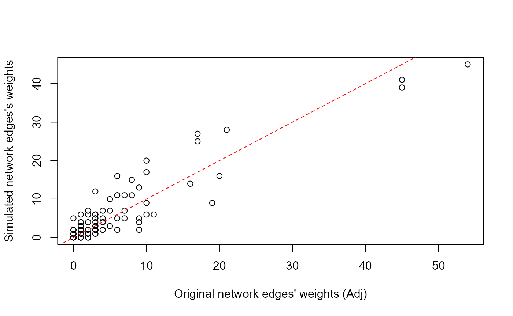
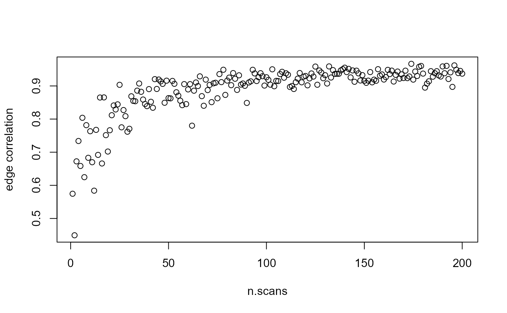

Let’s first retrieve the kangaroo social network we imported previously:
library(SimuNet)
Adj <- import_from_asnr("Mammalia",
"kangaroo_proximity_weighted",
output = "adjacency",type = "upper")
samp.effort <- 241L # number of observations reported by the authors
# data retrieved from (Grant, 1973)
# DOI: 10.1016/S0003-3472(73)80004-1
Adj # note that here, the suitable `mode` is driven by `type`
#> 1 2 3 4 5 6 7 8 9 10 11 12 13 14 15 16 17
#> 1 0 21 10 45 54 7 16 1 3 4 7 3 2 3 3 0 0
#> 2 0 0 9 19 20 3 9 1 10 4 11 2 2 2 6 0 0
#> 3 0 0 0 8 10 3 5 1 9 4 10 0 0 0 3 2 0
#> 4 0 0 0 0 45 7 17 1 1 3 6 3 2 3 4 0 0
#> 5 0 0 0 0 0 6 17 1 3 4 6 1 2 3 3 1 0
#> 6 0 0 0 0 0 0 4 1 2 2 3 3 3 1 4 0 0
#> 7 0 0 0 0 0 0 0 1 0 0 5 3 1 3 3 0 0
#> 8 0 0 0 0 0 0 0 0 1 1 1 1 0 0 0 0 0
#> 9 0 0 0 0 0 0 0 0 0 6 9 1 0 0 2 0 1
#> 10 0 0 0 0 0 0 0 0 0 0 8 1 0 0 0 0 0
#> 11 0 0 0 0 0 0 0 0 0 0 0 1 2 0 5 0 0
#> 12 0 0 0 0 0 0 0 0 0 0 0 0 0 0 0 0 0
#> 13 0 0 0 0 0 0 0 0 0 0 0 0 0 1 3 0 0
#> 14 0 0 0 0 0 0 0 0 0 0 0 0 0 0 1 0 0
#> 15 0 0 0 0 0 0 0 0 0 0 0 0 0 0 0 0 0
#> 16 0 0 0 0 0 0 0 0 0 0 0 0 0 0 0 0 0
#> 17 0 0 0 0 0 0 0 0 0 0 0 0 0 0 0 0 0
samp.effort
#> [1] 241This represents an undirected network in the form of an upper-triangular matrix
Simulations are obtained via this package’s main function simunet(). Let us see the detail of its inputs:
set.seed(42)
sL1 <- simunet(
Adj = Adj, # the first 3 arguments represent what has been observed and will
samp.effort = samp.effort, # serve the purpose of determining a suitable distribution for
mode = "upper", # each edge presence probability.
n.scans = 10 # this is how many scans should be _simulated_, which can be
) # different from the sampling effort samp.effort that was used
# to obtain Adj.
sL1
#>
#> scan: 1
#> 1 . . 1 . . . . . . . . . . . . . .
#> 2 . . . . . . . . . . . . . . . . .
#> 3 . . . . . . . . . . . . . . . . .
#> 4 . . . . . . . . . . . . . . . . .
#> 5 . . . . . . . . . . . . . . . . .
#> 6 . . . . . . . . . . . . . . . . .
#> 7 . . . . . . . . . . . . . . . . .
#> 8 . . . . . . . . . . . . . . . . .
#> 9 . . . . . . . . . . . . . . . . .
#> 10 . . . . . . . . . . . . . . . . .
#> 11 . . . . . . . . . . . . . . . . .
#> 12 . . . . . . . . . . . . . . . . .
#> 13 . . . . . . . . . . . . . . . . .
#> 14 . . . . . . . . . . . . . . . . .
#> 15 . . . . . . . . . . . . . . . . .
#> 16 . . . . . . . . . . . . . . . . .
#> 17 . . . . . . . . . . . . . . . . .
#>
#> scan: 2
#> 1 . . . . . . . . . . . . . . . . .
#> 2 . . . . . . . . . . . . . . . . .
#> 3 . . . . . . . . . . . . . . . . .
#> 4 . . . . . . . . . . . . . . . . .
#> 5 . . . . . . 1 . . . . . . . . . .
#> 6 . . . . . . . . . . 1 . 1 . . . .
#> 7 . . . . . . . . . . . . . . . . .
#> 8 . . . . . . . . . . . . . . . . .
#> 9 . . . . . . . . . . . . . . . . .
#> 10 . . . . . . . . . . . 1 . . . . .
#> 11 . . . . . . . . . . . 1 . . . . .
#> 12 . . . . . . . . . . . . . . . . .
#> 13 . . . . . . . . . . . . . . . . .
#> 14 . . . . . . . . . . . . . . . . .
#> 15 . . . . . . . . . . . . . . . . .
#> 16 . . . . . . . . . . . . . . . . .
#> 17 . . . . . . . . . . . . . . . . .
#>
#> ... ( 7 more scans)
#>
#> scan: 10
#> 1 . . . 1 1 . . . 1 . . . . . . . .
#> 2 . . . . . . . . . . . . . . . . .
#> 3 . . . . . . . . . . . . . . . . .
#> 4 . . . . 1 . . . . . . . . . . . .
#> 5 . . . . . . . . . . 1 . . . . . .
#> 6 . . . . . . . . . . . . . . . . .
#> 7 . . . . . . . . . . 1 . . . . . .
#> 8 . . . . . . . . . 1 . . . . . . .
#> 9 . . . . . . . . . . . . . . . . .
#> 10 . . . . . . . . . . . . . . . . .
#> 11 . . . . . . . . . . . . . . . . .
#> 12 . . . . . . . . . . . . . . . . .
#> 13 . . . . . . . . . . . . . . . . .
#> 14 . . . . . . . . . . . . . . . . .
#> 15 . . . . . . . . . . . . . . . . .
#> 16 . . . . . . . . . . . . . . . . .
#> 17 . . . . . . . . . . . . . . . . .
#>
#>
#> Hidden attributes: scanList.type raw.scanList Adj samp.effort n.scans mode Adj.subfun edge.ProbWe obtain a 17 x 17 x 10 array of 10 binary adjacency matrices, the 10 scans.
Simulating more scanLists from the same Adj and samp.effort will lead not only to different scans:
sL2 <- simunet(Adj,samp.effort,"upper",n.scans = 10)
sL2
#>
#> scan: 1
#> 1 . . . . . . . . . . . . . . . . .
#> 2 . . . . . . . . . . . . . . . . .
#> 3 . . . . . . . . . . . . . . . . .
#> 4 . . . . 1 . 1 . . . . . . . . . .
#> 5 . . . . . . . . . . . . . . . . .
#> 6 . . . . . . . . . . . . . . . . .
#> 7 . . . . . . . . . . . . . . . . .
#> 8 . . . . . . . . . . . . . . . . .
#> 9 . . . . . . . . . . . . . . . . .
#> 10 . . . . . . . . . . . . . . . . .
#> 11 . . . . . . . . . . . . . . . . .
#> 12 . . . . . . . . . . . . . . . . .
#> 13 . . . . . . . . . . . . . . . . .
#> 14 . . . . . . . . . . . . . . . . .
#> 15 . . . . . . . . . . . . . . . . .
#> 16 . . . . . . . . . . . . . . . . .
#> 17 . . . . . . . . . . . . . . . . .
#>
#> scan: 2
#> 1 . . . 1 . . . . . . . . . . . . .
#> 2 . . . . . . . . . . . . . . . . .
#> 3 . . . . . . . . . . . . . . . . .
#> 4 . . . . 1 . . . . . . . . . . . .
#> 5 . . . . . . . . . . . . . . . . .
#> 6 . . . . . . . . . . . . . . . . .
#> 7 . . . . . . . . . . . . . . . . .
#> 8 . . . . . . . . . . . . . . . . .
#> 9 . . . . . . . . . . . . . . . . .
#> 10 . . . . . . . . . . . . . . . . .
#> 11 . . . . . . . . . . . . . . . . .
#> 12 . . . . . . . . . . . . . . . . .
#> 13 . . . . . . . . . . . . . . . . .
#> 14 . . . . . . . . . . . . . . . . .
#> 15 . . . . . . . . . . . . . . . . .
#> 16 . . . . . . . . . . . . . . . . .
#> 17 . . . . . . . . . . . . . . . . .
#>
#> ... ( 7 more scans)
#>
#> scan: 10
#> 1 . . . . 1 . . . . . . . . . . . .
#> 2 . . . . . . . . . . . . . . . . .
#> 3 . . . . 1 . . . . . . . . . . . .
#> 4 . . . . . 1 . . 1 . . . . . . . .
#> 5 . . . . . . . . . . . . . . . . .
#> 6 . . . . . . . . . . . . . . . . .
#> 7 . . . . . . . . . . . . . . . . .
#> 8 . . . . . . . . . . 1 . . . . . .
#> 9 . . . . . . . . . . . . . . . . .
#> 10 . . . . . . . . . . . . . . . . .
#> 11 . . . . . . . . . . . . . . . . .
#> 12 . . . . . . . . . . . . . . . . .
#> 13 . . . . . . . . . . . . . . . . .
#> 14 . . . . . . . . . . . . . . . . .
#> 15 . . . . . . . . . . . . . . . . .
#> 16 . . . . . . . . . . . . . . . . .
#> 17 . . . . . . . . . . . . . . . . .
#>
#>
#> Hidden attributes: scanList.type raw.scanList Adj samp.effort n.scans mode Adj.subfun edge.Prob
identical(sL1,sL2)
#> [1] FALSEbut also internally a different edge presence probability matrix.
These matrices are stored in scanList their attribute list attrs, as the edge.Prob attribute, and can be accessed via attrs() in a similar fashion than base attr().
attrs(sL1,"edge.Prob")
#>
#> Edge presence probability matrix
#> 1 . 0.078 0.049 0.200 0.222 0.016 0.029 0.001 0.004 0.012 0.032 0.029 0.005
#> 2 . . 0.050 0.078 0.148 0.012 0.035 0.010 0.033 0.008 0.052 0.022 0.004
#> 3 . . . 0.067 0.042 0.013 0.021 0.003 0.028 0.024 0.055 . 0.001
#> 4 . . . . 0.231 0.041 0.101 0.014 . 0.008 0.028 0.007 0.011
#> 5 . . . . . 0.024 0.064 0.021 0.015 0.015 0.031 0.006 0.009
#> 6 . . . . . . 0.016 0.003 0.012 0.018 0.011 0.022 0.006
#> 7 . . . . . . . 0.011 0.007 0.001 0.025 0.008 0.012
#> 8 . . . . . . . . 0.015 0.003 0.012 0.003 0.004
#> 9 . . . . . . . . . 0.036 0.030 0.012 0.004
#> 10 . . . . . . . . . . 0.040 0.015 .
#> 11 . . . . . . . . . . . 0.010 0.007
#> 12 . . . . . . . . . . . . 0.002
#> 13 . . . . . . . . . . . . .
#> 14 . . . . . . . . . . . . .
#> 15 . . . . . . . . . . . . .
#> 16 . . . . . . . . . . . . .
#> 17 . . . . . . . . . . . . .
#>
#> 1 0.022 0.016 0.002 .
#> 2 0.024 0.013 0.003 0.002
#> 3 0.001 0.005 0.007 .
#> 4 0.011 0.020 0.002 0.004
#> 5 0.013 0.007 0.004 .
#> 6 0.008 0.019 0.010 .
#> 7 0.016 0.011 0.008 0.003
#> 8 0.002 0.001 . .
#> 9 0.001 0.016 0.002 0.006
#> 10 0.010 0.002 0.005 0.001
#> 11 0.007 0.041 0.009 0.001
#> 12 0.011 0.003 0.002 0.005
#> 13 0.001 0.033 0.004 .
#> 14 . 0.004 0.001 0.001
#> 15 . . . 0.006
#> 16 . . . 0.001
#> 17 . . . .
#>
#> alpha.prior = 0.5 - beta.prior = 0.5
sL2 |> attrs("edge.Prob") # most of `SimuNet`'s functions have been written to allow for piping
#>
#> Edge presence probability matrix
#> 1 . 0.086 0.045 0.165 0.199 0.017 0.104 0.019 0.017 0.022 0.045 0.003 0.020
#> 2 . . 0.027 0.115 0.068 0.017 0.036 0.005 0.047 0.013 0.053 0.003 0.028
#> 3 . . . 0.052 0.084 0.016 0.029 0.007 0.042 0.013 0.060 0.002 .
#> 4 . . . . 0.166 0.032 0.054 0.004 0.028 0.004 0.036 0.006 0.012
#> 5 . . . . . 0.025 0.076 . 0.020 0.023 0.020 0.012 0.005
#> 6 . . . . . . 0.017 0.007 0.005 0.018 0.016 0.003 0.009
#> 7 . . . . . . . 0.007 0.003 . 0.007 0.012 0.010
#> 8 . . . . . . . . 0.008 0.005 0.011 0.023 .
#> 9 . . . . . . . . . 0.014 0.057 0.004 .
#> 10 . . . . . . . . . . 0.025 0.002 .
#> 11 . . . . . . . . . . . 0.011 0.016
#> 12 . . . . . . . . . . . . .
#> 13 . . . . . . . . . . . . .
#> 14 . . . . . . . . . . . . .
#> 15 . . . . . . . . . . . . .
#> 16 . . . . . . . . . . . . .
#> 17 . . . . . . . . . . . . .
#>
#> 1 0.014 0.011 0.001 0.002
#> 2 . 0.034 . 0.001
#> 3 . 0.018 0.004 0.006
#> 4 0.011 0.010 0.001 0.003
#> 5 0.028 0.010 0.007 0.002
#> 6 0.003 0.020 0.001 0.009
#> 7 0.004 0.008 0.002 0.006
#> 8 . 0.005 0.003 0.002
#> 9 0.001 0.008 0.002 0.001
#> 10 . 0.002 . 0.014
#> 11 0.007 0.021 . 0.001
#> 12 . . 0.005 0.001
#> 13 0.001 0.014 0.001 0.001
#> 14 . 0.004 0.001 0.003
#> 15 . . 0.001 0.001
#> 16 . . . .
#> 17 . . . .
#>
#> alpha.prior = 0.5 - beta.prior = 0.5scanList
scanList’s 3D arrays can be summed over their 3rd dimension via sum_scans():
sum_scans(sL1)
#>
#> Weighted adjacency matrix
#> 1 . . 1 4 2 . . . 1 . . . . . . . .
#> 2 . . . . 4 . . . . . . . . . . . .
#> 3 . . . . . . . . . . . . . . 1 . .
#> 4 . . . . 3 . . . . . . . . . . . .
#> 5 . . . . . . 1 . . . 1 . . . . . .
#> 6 . . . . . . . . . 1 1 . 1 . . . .
#> 7 . . . . . . . . . . 1 . . . . . .
#> 8 . . . . . . . . . 1 . . . . . . .
#> 9 . . . . . . . . . . . . . . 1 . .
#> 10 . . . . . . . . . . . 1 . 1 . . .
#> 11 . . . . . . . . . . . 1 . . . . .
#> 12 . . . . . . . . . . . . . . . . .
#> 13 . . . . . . . . . . . . . . . . .
#> 14 . . . . . . . . . . . . . . . 1 .
#> 15 . . . . . . . . . . . . . . . . .
#> 16 . . . . . . . . . . . . . . . . .
#> 17 . . . . . . . . . . . . . . . . .
#>
#>
#> Hidden attributes: scanList.type raw.scanList Adj samp.effort n.scans mode Adj.subfun edge.Prob summed.scanList sampled
sL2 |> sum_scans()
#>
#> Weighted adjacency matrix
#> 1 . . . 3 3 . . . 1 . 1 . 1 . . . .
#> 2 . . 1 . 1 . . . . . 1 . 1 . 1 . .
#> 3 . . . . 1 . . . . . 1 . . . 1 . .
#> 4 . . . . 4 1 2 . 1 . . . . 1 . . .
#> 5 . . . . . 1 . . . . 1 . . . . . .
#> 6 . . . . . . . . . . . . . . . . .
#> 7 . . . . . . . . . . . . . . . . .
#> 8 . . . . . . . . . . 2 . . . . . .
#> 9 . . . . . . . . . . . . . . . . .
#> 10 . . . . . . . . . . . . . . . . .
#> 11 . . . . . . . . . . . . . . 1 . .
#> 12 . . . . . . . . . . . . . . . . .
#> 13 . . . . . . . . . . . . . . . . .
#> 14 . . . . . . . . . . . . . . . . .
#> 15 . . . . . . . . . . . . . . . . .
#> 16 . . . . . . . . . . . . . . . . .
#> 17 . . . . . . . . . . . . . . . . .
#>
#>
#> Hidden attributes: scanList.type raw.scanList Adj samp.effort n.scans mode Adj.subfun edge.Prob summed.scanList sampledFor future comparison purpose, let us define a function calculating the correlation between the edges of two triangular matrices:
Now, we run a new simulation containing as many scans as the input sampling effort to see how the simulation compares to Adj
sL3.Adj <- simunet(Adj,samp.effort,"upper",n.scans = samp.effort) |> sum_scans()
sL3.Adj |> attrs("Adj")
#>
#> Weighted adjacency matrix
#> 1 . 21 10 45 54 7 16 1 3 4 7 3 2 3 3 . .
#> 2 . . 9 19 20 3 9 1 10 4 11 2 2 2 6 . .
#> 3 . . . 8 10 3 5 1 9 4 10 . . . 3 2 .
#> 4 . . . . 45 7 17 1 1 3 6 3 2 3 4 . .
#> 5 . . . . . 6 17 1 3 4 6 1 2 3 3 1 .
#> 6 . . . . . . 4 1 2 2 3 3 3 1 4 . .
#> 7 . . . . . . . 1 . . 5 3 1 3 3 . .
#> 8 . . . . . . . . 1 1 1 1 . . . . .
#> 9 . . . . . . . . . 6 9 1 . . 2 . 1
#> 10 . . . . . . . . . . 8 1 . . . . .
#> 11 . . . . . . . . . . . 1 2 . 5 . .
#> 12 . . . . . . . . . . . . . . . . .
#> 13 . . . . . . . . . . . . . 1 3 . .
#> 14 . . . . . . . . . . . . . . 1 . .
#> 15 . . . . . . . . . . . . . . . . .
#> 16 . . . . . . . . . . . . . . . . .
#> 17 . . . . . . . . . . . . . . . . .
sL3.Adj
#>
#> Weighted adjacency matrix
#> 1 . 28 17 41 45 11 14 . 2 2 7 6 1 3 6 5 1
#> 2 . . 2 9 16 12 4 1 6 7 6 6 . 1 16 . .
#> 3 . . . 11 20 5 3 4 5 5 9 . . 1 4 2 .
#> 4 . . . . 39 5 25 . 3 6 11 2 7 3 4 . .
#> 5 . . . . . 2 27 . 5 4 11 1 4 6 3 4 .
#> 6 . . . . . . 2 3 . 6 1 2 5 . 2 . .
#> 7 . . . . . . . . 2 . 7 2 2 1 2 2 .
#> 8 . . . . . . . . 2 6 2 . . . 2 . .
#> 9 . . . . . . . . . 5 13 1 . . 1 . .
#> 10 . . . . . . . . . . 15 2 . . . . .
#> 11 . . . . . . . . . . . 1 . . 10 . .
#> 12 . . . . . . . . . . . . . . . . 1
#> 13 . . . . . . . . . . . . . . 2 . 1
#> 14 . . . . . . . . . . . . . . 1 . .
#> 15 . . . . . . . . . . . . . . . . .
#> 16 . . . . . . . . . . . . . . . . .
#> 17 . . . . . . . . . . . . . . . . .
#>
#>
#> Hidden attributes: scanList.type raw.scanList Adj samp.effort n.scans mode Adj.subfun edge.Prob summed.scanList sampled
upper_cor(Adj,sL3.Adj)
#> [1] 0.9187637
plot(Adj[upper.tri(Adj)],sL3.Adj[upper.tri(sL3.Adj)],
xlab = "Original network edges' weights (Adj)",
ylab = "Simulated network edges's weights"
)
abline(0,1,col = "red",lty = "dashed")
scanList
To compare scanList of different size, another “collapsing” function, scale_scans(), can be applied to scanList or their collapsed sums. scale_scans() divide the sum of binary edges by the number of time they were sampled (see more about sampling with customize_sampling() and empirical designs).
In the case of theoretical scanList, this means dividing the obtained weighted adjacency matrix by n.scans.
scale_scans(sL1)
#>
#> Scaled weighted adjacency matrix
#> 1 . . 0.1 0.4 0.2 . . . 0.1 . . . . . . . .
#> 2 . . . . 0.4 . . . . . . . . . . . .
#> 3 . . . . . . . . . . . . . . 0.1 . .
#> 4 . . . . 0.3 . . . . . . . . . . . .
#> 5 . . . . . . 0.1 . . . 0.1 . . . . . .
#> 6 . . . . . . . . . 0.1 0.1 . 0.1 . . . .
#> 7 . . . . . . . . . . 0.1 . . . . . .
#> 8 . . . . . . . . . 0.1 . . . . . . .
#> 9 . . . . . . . . . . . . . . 0.1 . .
#> 10 . . . . . . . . . . . 0.1 . 0.1 . . .
#> 11 . . . . . . . . . . . 0.1 . . . . .
#> 12 . . . . . . . . . . . . . . . . .
#> 13 . . . . . . . . . . . . . . . . .
#> 14 . . . . . . . . . . . . . . . 0.1 .
#> 15 . . . . . . . . . . . . . . . . .
#> 16 . . . . . . . . . . . . . . . . .
#> 17 . . . . . . . . . . . . . . . . .
#>
#>
#> Hidden attributes: scanList.type raw.scanList Adj samp.effort n.scans mode Adj.subfun edge.Prob summed.scanList sampled
sL2 |> scale_scans()
#>
#> Scaled weighted adjacency matrix
#> 1 . . . 0.3 0.3 . . . 0.1 . 0.1 . 0.1 . . . .
#> 2 . . 0.1 . 0.1 . . . . . 0.1 . 0.1 . 0.1 . .
#> 3 . . . . 0.1 . . . . . 0.1 . . . 0.1 . .
#> 4 . . . . 0.4 0.1 0.2 . 0.1 . . . . 0.1 . . .
#> 5 . . . . . 0.1 . . . . 0.1 . . . . . .
#> 6 . . . . . . . . . . . . . . . . .
#> 7 . . . . . . . . . . . . . . . . .
#> 8 . . . . . . . . . . 0.2 . . . . . .
#> 9 . . . . . . . . . . . . . . . . .
#> 10 . . . . . . . . . . . . . . . . .
#> 11 . . . . . . . . . . . . . . 0.1 . .
#> 12 . . . . . . . . . . . . . . . . .
#> 13 . . . . . . . . . . . . . . . . .
#> 14 . . . . . . . . . . . . . . . . .
#> 15 . . . . . . . . . . . . . . . . .
#> 16 . . . . . . . . . . . . . . . . .
#> 17 . . . . . . . . . . . . . . . . .
#>
#>
#> Hidden attributes: scanList.type raw.scanList Adj samp.effort n.scans mode Adj.subfun edge.Prob summed.scanList sampled
scale_scans(sL3.Adj)
#>
#> Scaled weighted adjacency matrix
#> 1 . 0.116 0.071 0.170 0.187 0.046 0.058 . 0.008 0.008 0.029 0.025 0.004
#> 2 . . 0.008 0.037 0.066 0.050 0.017 0.004 0.025 0.029 0.025 0.025 .
#> 3 . . . 0.046 0.083 0.021 0.012 0.017 0.021 0.021 0.037 . .
#> 4 . . . . 0.162 0.021 0.104 . 0.012 0.025 0.046 0.008 0.029
#> 5 . . . . . 0.008 0.112 . 0.021 0.017 0.046 0.004 0.017
#> 6 . . . . . . 0.008 0.012 . 0.025 0.004 0.008 0.021
#> 7 . . . . . . . . 0.008 . 0.029 0.008 0.008
#> 8 . . . . . . . . 0.008 0.025 0.008 . .
#> 9 . . . . . . . . . 0.021 0.054 0.004 .
#> 10 . . . . . . . . . . 0.062 0.008 .
#> 11 . . . . . . . . . . . 0.004 .
#> 12 . . . . . . . . . . . . .
#> 13 . . . . . . . . . . . . .
#> 14 . . . . . . . . . . . . .
#> 15 . . . . . . . . . . . . .
#> 16 . . . . . . . . . . . . .
#> 17 . . . . . . . . . . . . .
#>
#> 1 0.012 0.025 0.021 0.004
#> 2 0.004 0.066 . .
#> 3 0.004 0.017 0.008 .
#> 4 0.012 0.017 . .
#> 5 0.025 0.012 0.017 .
#> 6 . 0.008 . .
#> 7 0.004 0.008 0.008 .
#> 8 . 0.008 . .
#> 9 . 0.004 . .
#> 10 . . . .
#> 11 . 0.041 . .
#> 12 . . . 0.004
#> 13 . 0.008 . 0.004
#> 14 . 0.004 . .
#> 15 . . . .
#> 16 . . . .
#> 17 . . . .
#>
#>
#> Hidden attributes: scanList.type raw.scanList Adj samp.effort n.scans mode Adj.subfun edge.Prob summed.scanList sampledOne can look at how the correlation with a scaled Adj evolve with increasing n.scans
scaled.list <-
lapply(
round(seq(10,250,length.out = 200)),
function(n) simunet(Adj,samp.effort,"upper",n) |> scale_scans()
)
scaled.list |>
sapply(upper_cor,Y = Adj / samp.effort) |>
plot(xlab = "n.scans",ylab = "edge correlation")